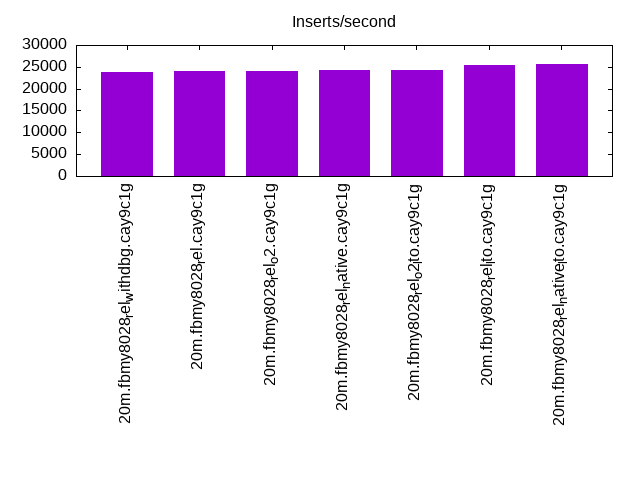

This is a report for the insert benchmark with 20M docs and 1 client(s). It is generated by scripts (bash, awk, sed) and Tufte might not be impressed. An overview of the insert benchmark is here and a short update is here. Below, by DBMS, I mean DBMS+version.config. An example is my8020.c10b40 where my means MySQL, 8020 is version 8.0.20 and c10b40 is the name for the configuration file.
The test server has 8 AMD cores, 16G RAM and an NVMe SSD. It is described here as the Beelink. The benchmark was run with 1 client and there were 1 or 2 connections per client (1 for queries, 1 for inserts). The benchmark loads 20M rows without secondary indexes, creates secondary indexes, loads another 20M rows then does 3 read+write tests for one hour each that do queries as fast as possible with 100, 500 and then 1000 writes/second/client concurrent with the queries. There is one table per client. The database is cached by the OS page cache but not by the storage engine. Clients and the DBMS share one server. The per-database configs are in the per-database subdirectories here.
The tested DBMS are:
The numbers are inserts/s for l.i0 and l.i1, indexed docs (or rows) /s for l.x and queries/s for q*.2. The values are the average rate over the entire test for inserts (IPS) and queries (QPS). The range of values for IPS and QPS is split into 3 parts: bottom 25%, middle 50%, top 25%. Values in the bottom 25% have a red background, values in the top 25% have a green background and values in the middle have no color. A gray background is used for values that can be ignored because the DBMS did not sustain the target insert rate. Red backgrounds are not used when the minimum value is within 80% of the max value.
| dbms | l.i0 | l.x | l.i1 | q100.1 | q500.1 | q1000.1 |
|---|---|---|---|---|---|---|
| 20m.fbmy8028_rel_withdbg.cay9c1g | 57143 | 64423 | 23923 | 2178 | 2162 | 2228 |
| 20m.fbmy8028_rel.cay9c1g | 57471 | 72043 | 24067 | 2275 | 2213 | 2252 |
| 20m.fbmy8028_rel_o2.cay9c1g | 57143 | 64217 | 23981 | 2210 | 2191 | 2185 |
| 20m.fbmy8028_rel_native.cay9c1g | 57306 | 71786 | 24213 | 2258 | 2157 | 2186 |
| 20m.fbmy8028_rel_o2_lto.cay9c1g | 57803 | 64630 | 24301 | 2345 | 2250 | 2222 |
| 20m.fbmy8028_rel_lto.cay9c1g | 59880 | 75849 | 25413 | 2252 | 2232 | 2198 |
| 20m.fbmy8028_rel_native_lto.cay9c1g | 60790 | 76426 | 25543 | 2312 | 2331 | 2276 |
This table has relative throughput, throughput for the DBMS relative to the DBMS in the first line, using the absolute throughput from the previous table.
| dbms | l.i0 | l.x | l.i1 | q100.1 | q500.1 | q1000.1 |
|---|---|---|---|---|---|---|
| 20m.fbmy8028_rel_withdbg.cay9c1g | 1.00 | 1.00 | 1.00 | 1.00 | 1.00 | 1.00 |
| 20m.fbmy8028_rel.cay9c1g | 1.01 | 1.12 | 1.01 | 1.04 | 1.02 | 1.01 |
| 20m.fbmy8028_rel_o2.cay9c1g | 1.00 | 1.00 | 1.00 | 1.01 | 1.01 | 0.98 |
| 20m.fbmy8028_rel_native.cay9c1g | 1.00 | 1.11 | 1.01 | 1.04 | 1.00 | 0.98 |
| 20m.fbmy8028_rel_o2_lto.cay9c1g | 1.01 | 1.00 | 1.02 | 1.08 | 1.04 | 1.00 |
| 20m.fbmy8028_rel_lto.cay9c1g | 1.05 | 1.18 | 1.06 | 1.03 | 1.03 | 0.99 |
| 20m.fbmy8028_rel_native_lto.cay9c1g | 1.06 | 1.19 | 1.07 | 1.06 | 1.08 | 1.02 |
This lists the average rate of inserts/s for the tests that do inserts concurrent with queries. For such tests the query rate is listed in the table above. The read+write tests are setup so that the insert rate should match the target rate every second. Cells that are not at least 95% of the target have a red background to indicate a failure to satisfy the target.
| dbms | q100.1 | q500.1 | q1000.1 |
|---|---|---|---|
| fbmy8028_rel_withdbg.cay9c1g | 100 | 499 | 998 |
| fbmy8028_rel.cay9c1g | 100 | 499 | 998 |
| fbmy8028_rel_o2.cay9c1g | 100 | 499 | 998 |
| fbmy8028_rel_native.cay9c1g | 100 | 499 | 998 |
| fbmy8028_rel_o2_lto.cay9c1g | 100 | 499 | 998 |
| fbmy8028_rel_lto.cay9c1g | 100 | 499 | 998 |
| fbmy8028_rel_native_lto.cay9c1g | 100 | 499 | 998 |
| target | 100 | 500 | 1000 |
l.i0: load without secondary indexes. Graphs for performance per 1-second interval are here.
Average throughput:
Insert response time histogram: each cell has the percentage of responses that take <= the time in the header and max is the max response time in seconds. For the max column values in the top 25% of the range have a red background and in the bottom 25% of the range have a green background. The red background is not used when the min value is within 80% of the max value.
| dbms | 256us | 1ms | 4ms | 16ms | 64ms | 256ms | 1s | 4s | 16s | gt | max |
|---|---|---|---|---|---|---|---|---|---|---|---|
| fbmy8028_rel_withdbg.cay9c1g | 99.721 | 0.205 | 0.072 | 0.003 | 0.083 | ||||||
| fbmy8028_rel.cay9c1g | 99.721 | 0.198 | 0.078 | 0.003 | 0.075 | ||||||
| fbmy8028_rel_o2.cay9c1g | 99.720 | 0.204 | 0.073 | 0.003 | 0.082 | ||||||
| fbmy8028_rel_native.cay9c1g | 99.721 | 0.203 | 0.072 | 0.003 | 0.103 | ||||||
| fbmy8028_rel_o2_lto.cay9c1g | 99.723 | 0.202 | 0.072 | 0.002 | 0.076 | ||||||
| fbmy8028_rel_lto.cay9c1g | 99.727 | 0.200 | 0.071 | 0.002 | 0.080 | ||||||
| fbmy8028_rel_native_lto.cay9c1g | 99.733 | 0.192 | 0.073 | 0.003 | 0.074 |
Performance metrics for the DBMS listed above. Some are normalized by throughput, others are not. Legend for results is here.
ips qps rps rmbps wps wmbps rpq rkbpq wpi wkbpi csps cpups cspq cpupq dbgb1 dbgb2 rss maxop p50 p99 tag 57143 0 0 0.0 35.8 11.1 0.000 0.000 0.001 0.199 5942 22.2 0.104 31 0.7 1.9 0.6 0.083 57337 51342 20m.fbmy8028_rel_withdbg.cay9c1g 57471 0 0 0.0 35.9 11.2 0.000 0.000 0.001 0.200 5992 22.4 0.104 31 0.7 1.9 0.6 0.075 57736 51442 20m.fbmy8028_rel.cay9c1g 57143 0 0 0.0 35.6 11.1 0.000 0.000 0.001 0.200 5933 22.2 0.104 31 0.7 1.9 0.6 0.082 57237 50781 20m.fbmy8028_rel_o2.cay9c1g 57306 0 0 0.0 35.5 11.1 0.000 0.000 0.001 0.199 5977 22.3 0.104 31 0.7 1.9 0.6 0.103 57635 49957 20m.fbmy8028_rel_native.cay9c1g 57803 0 0 0.0 36.4 11.3 0.000 0.000 0.001 0.200 6003 22.5 0.104 31 0.7 1.9 0.6 0.076 58134 51841 20m.fbmy8028_rel_o2_lto.cay9c1g 59880 0 0 0.0 37.0 11.6 0.000 0.000 0.001 0.199 6185 22.7 0.103 30 0.7 1.9 0.6 0.080 59932 53540 20m.fbmy8028_rel_lto.cay9c1g 60790 0 0 0.0 38.0 11.8 0.000 0.000 0.001 0.199 6291 23.2 0.103 31 0.7 1.9 0.6 0.074 61328 54338 20m.fbmy8028_rel_native_lto.cay9c1g
l.x: create secondary indexes.
Average throughput:
Performance metrics for the DBMS listed above. Some are normalized by throughput, others are not. Legend for results is here.
ips qps rps rmbps wps wmbps rpq rkbpq wpi wkbpi csps cpups cspq cpupq dbgb1 dbgb2 rss maxop p50 p99 tag 64423 0 0 0.0 25.2 9.8 0.000 0.000 0.000 0.155 383 12.8 0.006 16 1.4 2.7 1.8 0.008 NA NA 20m.fbmy8028_rel_withdbg.cay9c1g 72043 0 0 0.0 27.9 10.9 0.000 0.000 0.000 0.155 381 12.8 0.005 14 1.4 2.7 1.9 0.007 NA NA 20m.fbmy8028_rel.cay9c1g 64217 0 0 0.0 25.2 9.8 0.000 0.000 0.000 0.156 383 12.8 0.006 16 1.4 2.7 1.9 0.012 NA NA 20m.fbmy8028_rel_o2.cay9c1g 71786 0 0 0.0 28.2 10.9 0.000 0.000 0.000 0.156 401 12.7 0.006 14 1.4 2.7 1.9 0.011 NA NA 20m.fbmy8028_rel_native.cay9c1g 64630 0 0 0.0 25.6 9.8 0.000 0.000 0.000 0.156 372 12.8 0.006 16 1.4 2.7 1.9 0.022 NA NA 20m.fbmy8028_rel_o2_lto.cay9c1g 75849 0 0 0.0 29.1 11.5 0.000 0.000 0.000 0.155 369 12.7 0.005 13 1.4 2.7 1.9 0.013 NA NA 20m.fbmy8028_rel_lto.cay9c1g 76426 0 0 0.0 29.8 11.6 0.000 0.000 0.000 0.155 402 13.4 0.005 14 1.4 2.7 1.9 0.008 NA NA 20m.fbmy8028_rel_native_lto.cay9c1g
l.i1: continue load after secondary indexes created. Graphs for performance per 1-second interval are here.
Average throughput:
Insert response time histogram: each cell has the percentage of responses that take <= the time in the header and max is the max response time in seconds. For the max column values in the top 25% of the range have a red background and in the bottom 25% of the range have a green background. The red background is not used when the min value is within 80% of the max value.
| dbms | 256us | 1ms | 4ms | 16ms | 64ms | 256ms | 1s | 4s | 16s | gt | max |
|---|---|---|---|---|---|---|---|---|---|---|---|
| fbmy8028_rel_withdbg.cay9c1g | 99.735 | 0.226 | 0.040 | nonzero | 0.065 | ||||||
| fbmy8028_rel.cay9c1g | 99.738 | 0.226 | 0.036 | 0.063 | |||||||
| fbmy8028_rel_o2.cay9c1g | 99.736 | 0.225 | 0.039 | nonzero | 0.069 | ||||||
| fbmy8028_rel_native.cay9c1g | 99.736 | 0.225 | 0.039 | 0.063 | |||||||
| fbmy8028_rel_o2_lto.cay9c1g | 99.739 | 0.223 | 0.038 | 0.001 | 0.074 | ||||||
| fbmy8028_rel_lto.cay9c1g | 99.749 | 0.211 | 0.040 | nonzero | 0.072 | ||||||
| fbmy8028_rel_native_lto.cay9c1g | 99.749 | 0.214 | 0.036 | nonzero | 0.073 |
Performance metrics for the DBMS listed above. Some are normalized by throughput, others are not. Legend for results is here.
ips qps rps rmbps wps wmbps rpq rkbpq wpi wkbpi csps cpups cspq cpupq dbgb1 dbgb2 rss maxop p50 p99 tag 23923 0 7 0.9 64.3 24.7 0.000 0.038 0.003 1.056 5356 27.2 0.224 91 2.8 4.7 1.6 0.065 23722 21027 20m.fbmy8028_rel_withdbg.cay9c1g 24067 0 7 0.9 63.0 24.6 0.000 0.038 0.003 1.046 5337 26.8 0.222 89 3.0 5.0 1.7 0.063 23874 21327 20m.fbmy8028_rel.cay9c1g 23981 0 7 0.9 64.4 24.8 0.000 0.038 0.003 1.059 5353 27.2 0.223 91 3.1 5.0 1.6 0.069 23823 21176 20m.fbmy8028_rel_o2.cay9c1g 24213 0 7 0.9 64.6 25.0 0.000 0.038 0.003 1.055 5382 26.9 0.222 89 2.8 4.7 1.7 0.063 24024 21425 20m.fbmy8028_rel_native.cay9c1g 24301 0 7 0.9 63.8 24.4 0.000 0.038 0.003 1.030 5367 27.5 0.221 91 3.0 4.9 1.6 0.074 24074 21426 20m.fbmy8028_rel_o2_lto.cay9c1g 25413 0 8 0.9 66.9 26.1 0.000 0.038 0.003 1.050 5624 27.0 0.221 85 2.9 4.8 1.7 0.072 25272 22176 20m.fbmy8028_rel_lto.cay9c1g 25543 0 8 0.9 68.5 26.5 0.000 0.038 0.003 1.062 5669 27.8 0.222 87 2.8 4.7 1.7 0.073 25422 22624 20m.fbmy8028_rel_native_lto.cay9c1g
q100.1: range queries with 100 insert/s per client. Graphs for performance per 1-second interval are here.
Average throughput:
Query response time histogram: each cell has the percentage of responses that take <= the time in the header and max is the max response time in seconds. For max values in the top 25% of the range have a red background and in the bottom 25% of the range have a green background. The red background is not used when the min value is within 80% of the max value.
| dbms | 256us | 1ms | 4ms | 16ms | 64ms | 256ms | 1s | 4s | 16s | gt | max |
|---|---|---|---|---|---|---|---|---|---|---|---|
| fbmy8028_rel_withdbg.cay9c1g | 0.220 | 99.779 | 0.001 | 0.003 | |||||||
| fbmy8028_rel.cay9c1g | 0.527 | 99.472 | 0.001 | 0.003 | |||||||
| fbmy8028_rel_o2.cay9c1g | 0.320 | 99.679 | 0.001 | 0.003 | |||||||
| fbmy8028_rel_native.cay9c1g | 0.407 | 99.592 | 0.001 | 0.003 | |||||||
| fbmy8028_rel_o2_lto.cay9c1g | 0.994 | 99.005 | 0.001 | 0.003 | |||||||
| fbmy8028_rel_lto.cay9c1g | 0.591 | 99.407 | 0.001 | 0.003 | |||||||
| fbmy8028_rel_native_lto.cay9c1g | 0.929 | 99.070 | 0.001 | 0.003 |
Insert response time histogram: each cell has the percentage of responses that take <= the time in the header and max is the max response time in seconds. For max values in the top 25% of the range have a red background and in the bottom 25% of the range have a green background. The red background is not used when the min value is within 80% of the max value.
| dbms | 256us | 1ms | 4ms | 16ms | 64ms | 256ms | 1s | 4s | 16s | gt | max |
|---|---|---|---|---|---|---|---|---|---|---|---|
| fbmy8028_rel_withdbg.cay9c1g | 99.611 | 0.361 | 0.028 | 0.024 | |||||||
| fbmy8028_rel.cay9c1g | 99.556 | 0.444 | 0.009 | ||||||||
| fbmy8028_rel_o2.cay9c1g | 99.528 | 0.444 | 0.028 | 0.018 | |||||||
| fbmy8028_rel_native.cay9c1g | 99.500 | 0.472 | 0.028 | 0.018 | |||||||
| fbmy8028_rel_o2_lto.cay9c1g | 99.556 | 0.417 | 0.028 | 0.018 | |||||||
| fbmy8028_rel_lto.cay9c1g | 99.583 | 0.417 | 0.009 | ||||||||
| fbmy8028_rel_native_lto.cay9c1g | 99.639 | 0.333 | 0.028 | 0.017 |
Performance metrics for the DBMS listed above. Some are normalized by throughput, others are not. Legend for results is here.
ips qps rps rmbps wps wmbps rpq rkbpq wpi wkbpi csps cpups cspq cpupq dbgb1 dbgb2 rss maxop p50 p99 tag 100 2178 0 0.0 3.5 0.1 0.000 0.000 0.035 0.874 8580 13.4 3.940 492 2.8 4.8 2.1 0.003 2110 2029 20m.fbmy8028_rel_withdbg.cay9c1g 100 2275 0 0.0 3.6 0.2 0.000 0.000 0.036 1.611 8947 13.5 3.933 475 2.8 4.8 2.0 0.003 2206 2062 20m.fbmy8028_rel.cay9c1g 100 2210 0 0.0 3.6 0.1 0.000 0.000 0.036 1.265 8710 13.5 3.942 489 2.8 4.8 2.1 0.003 2142 2029 20m.fbmy8028_rel_o2.cay9c1g 100 2258 0 0.0 3.4 0.1 0.000 0.000 0.034 0.870 8878 13.4 3.931 475 2.8 4.8 2.1 0.003 2221 2029 20m.fbmy8028_rel_native.cay9c1g 100 2345 0 0.0 4.4 0.4 0.000 0.000 0.044 4.554 9217 13.6 3.931 464 2.8 4.7 2.0 0.003 2317 2157 20m.fbmy8028_rel_o2_lto.cay9c1g 100 2252 0 0.0 3.6 0.1 0.000 0.000 0.036 1.449 8868 13.4 3.937 476 2.8 4.8 2.0 0.003 2190 2046 20m.fbmy8028_rel_lto.cay9c1g 100 2312 0 0.0 3.5 0.1 0.000 0.000 0.035 1.239 9103 14.1 3.937 488 2.8 4.7 2.0 0.003 2253 2110 20m.fbmy8028_rel_native_lto.cay9c1g
q500.1: range queries with 500 insert/s per client. Graphs for performance per 1-second interval are here.
Average throughput:
Query response time histogram: each cell has the percentage of responses that take <= the time in the header and max is the max response time in seconds. For max values in the top 25% of the range have a red background and in the bottom 25% of the range have a green background. The red background is not used when the min value is within 80% of the max value.
| dbms | 256us | 1ms | 4ms | 16ms | 64ms | 256ms | 1s | 4s | 16s | gt | max |
|---|---|---|---|---|---|---|---|---|---|---|---|
| fbmy8028_rel_withdbg.cay9c1g | 0.053 | 99.947 | nonzero | nonzero | 0.004 | ||||||
| fbmy8028_rel.cay9c1g | 0.088 | 99.911 | nonzero | 0.002 | |||||||
| fbmy8028_rel_o2.cay9c1g | 0.093 | 99.907 | nonzero | 0.002 | |||||||
| fbmy8028_rel_native.cay9c1g | 0.117 | 99.882 | 0.001 | 0.003 | |||||||
| fbmy8028_rel_o2_lto.cay9c1g | 0.360 | 99.640 | nonzero | 0.003 | |||||||
| fbmy8028_rel_lto.cay9c1g | 0.258 | 99.742 | nonzero | 0.001 | |||||||
| fbmy8028_rel_native_lto.cay9c1g | 0.831 | 99.168 | 0.001 | 0.003 |
Insert response time histogram: each cell has the percentage of responses that take <= the time in the header and max is the max response time in seconds. For max values in the top 25% of the range have a red background and in the bottom 25% of the range have a green background. The red background is not used when the min value is within 80% of the max value.
| dbms | 256us | 1ms | 4ms | 16ms | 64ms | 256ms | 1s | 4s | 16s | gt | max |
|---|---|---|---|---|---|---|---|---|---|---|---|
| fbmy8028_rel_withdbg.cay9c1g | 99.606 | 0.356 | 0.039 | 0.018 | |||||||
| fbmy8028_rel.cay9c1g | 99.639 | 0.322 | 0.039 | 0.023 | |||||||
| fbmy8028_rel_o2.cay9c1g | 99.639 | 0.317 | 0.044 | 0.024 | |||||||
| fbmy8028_rel_native.cay9c1g | 99.606 | 0.356 | 0.039 | 0.018 | |||||||
| fbmy8028_rel_o2_lto.cay9c1g | 99.644 | 0.322 | 0.033 | 0.018 | |||||||
| fbmy8028_rel_lto.cay9c1g | 99.639 | 0.317 | 0.044 | 0.023 | |||||||
| fbmy8028_rel_native_lto.cay9c1g | 99.611 | 0.344 | 0.044 | 0.018 |
Performance metrics for the DBMS listed above. Some are normalized by throughput, others are not. Legend for results is here.
ips qps rps rmbps wps wmbps rpq rkbpq wpi wkbpi csps cpups cspq cpupq dbgb1 dbgb2 rss maxop p50 p99 tag 499 2162 0 0.0 3.8 0.2 0.000 0.000 0.008 0.509 8587 13.6 3.971 503 2.9 5.0 1.9 0.004 2158 1966 20m.fbmy8028_rel_withdbg.cay9c1g 499 2213 0 0.0 3.7 0.2 0.000 0.000 0.007 0.508 8772 13.5 3.964 488 2.9 5.0 1.9 0.002 2189 1982 20m.fbmy8028_rel.cay9c1g 499 2191 0 0.0 3.7 0.2 0.000 0.000 0.007 0.508 8692 13.5 3.968 493 2.9 5.0 2.0 0.002 2190 1982 20m.fbmy8028_rel_o2.cay9c1g 499 2157 0 0.0 3.8 0.2 0.000 0.000 0.008 0.509 8558 13.5 3.967 501 2.9 5.0 1.9 0.003 2142 1949 20m.fbmy8028_rel_native.cay9c1g 499 2250 0 0.0 3.6 0.2 0.000 0.000 0.007 0.409 8914 13.5 3.962 480 2.9 4.9 2.0 0.003 2206 2014 20m.fbmy8028_rel_o2_lto.cay9c1g 499 2232 0 0.0 3.8 0.3 0.000 0.000 0.008 0.571 8849 13.5 3.964 484 2.9 5.0 1.8 0.001 2205 2014 20m.fbmy8028_rel_lto.cay9c1g 499 2331 0 0.0 3.8 0.3 0.000 0.000 0.008 0.571 9238 13.9 3.964 477 2.9 5.0 1.9 0.003 2301 2062 20m.fbmy8028_rel_native_lto.cay9c1g
q1000.1: range queries with 1000 insert/s per client. Graphs for performance per 1-second interval are here.
Average throughput:
Query response time histogram: each cell has the percentage of responses that take <= the time in the header and max is the max response time in seconds. For max values in the top 25% of the range have a red background and in the bottom 25% of the range have a green background. The red background is not used when the min value is within 80% of the max value.
| dbms | 256us | 1ms | 4ms | 16ms | 64ms | 256ms | 1s | 4s | 16s | gt | max |
|---|---|---|---|---|---|---|---|---|---|---|---|
| fbmy8028_rel_withdbg.cay9c1g | 0.217 | 99.782 | 0.001 | 0.003 | |||||||
| fbmy8028_rel.cay9c1g | 0.333 | 99.666 | nonzero | nonzero | 0.005 | ||||||
| fbmy8028_rel_o2.cay9c1g | 0.149 | 99.851 | 0.001 | 0.004 | |||||||
| fbmy8028_rel_native.cay9c1g | 0.142 | 99.857 | 0.001 | nonzero | 0.006 | ||||||
| fbmy8028_rel_o2_lto.cay9c1g | 0.328 | 99.671 | 0.001 | 0.003 | |||||||
| fbmy8028_rel_lto.cay9c1g | 0.308 | 99.691 | 0.001 | nonzero | 0.004 | ||||||
| fbmy8028_rel_native_lto.cay9c1g | 0.678 | 99.321 | nonzero | nonzero | 0.004 |
Insert response time histogram: each cell has the percentage of responses that take <= the time in the header and max is the max response time in seconds. For max values in the top 25% of the range have a red background and in the bottom 25% of the range have a green background. The red background is not used when the min value is within 80% of the max value.
| dbms | 256us | 1ms | 4ms | 16ms | 64ms | 256ms | 1s | 4s | 16s | gt | max |
|---|---|---|---|---|---|---|---|---|---|---|---|
| fbmy8028_rel_withdbg.cay9c1g | 99.625 | 0.331 | 0.044 | 0.023 | |||||||
| fbmy8028_rel.cay9c1g | 99.617 | 0.344 | 0.039 | 0.023 | |||||||
| fbmy8028_rel_o2.cay9c1g | 99.614 | 0.339 | 0.047 | 0.023 | |||||||
| fbmy8028_rel_native.cay9c1g | 99.625 | 0.331 | 0.044 | 0.024 | |||||||
| fbmy8028_rel_o2_lto.cay9c1g | 99.650 | 0.311 | 0.039 | 0.023 | |||||||
| fbmy8028_rel_lto.cay9c1g | 99.617 | 0.344 | 0.039 | 0.018 | |||||||
| fbmy8028_rel_native_lto.cay9c1g | 99.619 | 0.342 | 0.039 | 0.018 |
Performance metrics for the DBMS listed above. Some are normalized by throughput, others are not. Legend for results is here.
ips qps rps rmbps wps wmbps rpq rkbpq wpi wkbpi csps cpups cspq cpupq dbgb1 dbgb2 rss maxop p50 p99 tag 998 2228 0 0.0 6.3 1.2 0.000 0.000 0.006 1.275 8956 14.6 4.019 524 3.1 3.3 1.8 0.003 2205 1966 20m.fbmy8028_rel_withdbg.cay9c1g 998 2252 0 0.0 6.5 1.3 0.000 0.000 0.006 1.333 9037 14.8 4.013 526 3.0 3.3 1.7 0.005 2222 1982 20m.fbmy8028_rel.cay9c1g 998 2185 0 0.0 5.7 1.0 0.000 0.000 0.006 1.056 8777 14.5 4.018 531 3.1 3.4 1.7 0.004 2142 1981 20m.fbmy8028_rel_o2.cay9c1g 998 2186 0 0.0 6.3 1.2 0.000 0.000 0.006 1.275 8778 14.6 4.016 534 3.1 3.3 1.7 0.006 2141 1950 20m.fbmy8028_rel_native.cay9c1g 998 2222 0 0.0 5.7 1.0 0.000 0.000 0.006 1.011 8917 14.5 4.014 522 3.0 3.3 1.8 0.003 2190 1998 20m.fbmy8028_rel_o2_lto.cay9c1g 998 2198 0 0.0 5.3 0.9 0.000 0.000 0.005 0.936 8828 14.4 4.016 524 3.1 3.4 1.7 0.004 2158 1982 20m.fbmy8028_rel_lto.cay9c1g 998 2276 0 0.0 5.0 0.8 0.000 0.000 0.005 0.793 9130 14.3 4.010 503 3.1 3.4 1.9 0.004 2253 2030 20m.fbmy8028_rel_native_lto.cay9c1g
l.i0: load without secondary indexes
Performance metrics for all DBMS, not just the ones listed above. Some are normalized by throughput, others are not. Legend for results is here.
ips qps rps rmbps wps wmbps rpq rkbpq wpi wkbpi csps cpups cspq cpupq dbgb1 dbgb2 rss maxop p50 p99 tag 57143 0 0 0.0 35.8 11.1 0.000 0.000 0.001 0.199 5942 22.2 0.104 31 0.7 1.9 0.6 0.083 57337 51342 20m.fbmy8028_rel_withdbg.cay9c1g 57471 0 0 0.0 35.9 11.2 0.000 0.000 0.001 0.200 5992 22.4 0.104 31 0.7 1.9 0.6 0.075 57736 51442 20m.fbmy8028_rel.cay9c1g 57143 0 0 0.0 35.6 11.1 0.000 0.000 0.001 0.200 5933 22.2 0.104 31 0.7 1.9 0.6 0.082 57237 50781 20m.fbmy8028_rel_o2.cay9c1g 57306 0 0 0.0 35.5 11.1 0.000 0.000 0.001 0.199 5977 22.3 0.104 31 0.7 1.9 0.6 0.103 57635 49957 20m.fbmy8028_rel_native.cay9c1g 57803 0 0 0.0 36.4 11.3 0.000 0.000 0.001 0.200 6003 22.5 0.104 31 0.7 1.9 0.6 0.076 58134 51841 20m.fbmy8028_rel_o2_lto.cay9c1g 59880 0 0 0.0 37.0 11.6 0.000 0.000 0.001 0.199 6185 22.7 0.103 30 0.7 1.9 0.6 0.080 59932 53540 20m.fbmy8028_rel_lto.cay9c1g 60790 0 0 0.0 38.0 11.8 0.000 0.000 0.001 0.199 6291 23.2 0.103 31 0.7 1.9 0.6 0.074 61328 54338 20m.fbmy8028_rel_native_lto.cay9c1g
l.x: create secondary indexes
Performance metrics for all DBMS, not just the ones listed above. Some are normalized by throughput, others are not. Legend for results is here.
ips qps rps rmbps wps wmbps rpq rkbpq wpi wkbpi csps cpups cspq cpupq dbgb1 dbgb2 rss maxop p50 p99 tag 64423 0 0 0.0 25.2 9.8 0.000 0.000 0.000 0.155 383 12.8 0.006 16 1.4 2.7 1.8 0.008 NA NA 20m.fbmy8028_rel_withdbg.cay9c1g 72043 0 0 0.0 27.9 10.9 0.000 0.000 0.000 0.155 381 12.8 0.005 14 1.4 2.7 1.9 0.007 NA NA 20m.fbmy8028_rel.cay9c1g 64217 0 0 0.0 25.2 9.8 0.000 0.000 0.000 0.156 383 12.8 0.006 16 1.4 2.7 1.9 0.012 NA NA 20m.fbmy8028_rel_o2.cay9c1g 71786 0 0 0.0 28.2 10.9 0.000 0.000 0.000 0.156 401 12.7 0.006 14 1.4 2.7 1.9 0.011 NA NA 20m.fbmy8028_rel_native.cay9c1g 64630 0 0 0.0 25.6 9.8 0.000 0.000 0.000 0.156 372 12.8 0.006 16 1.4 2.7 1.9 0.022 NA NA 20m.fbmy8028_rel_o2_lto.cay9c1g 75849 0 0 0.0 29.1 11.5 0.000 0.000 0.000 0.155 369 12.7 0.005 13 1.4 2.7 1.9 0.013 NA NA 20m.fbmy8028_rel_lto.cay9c1g 76426 0 0 0.0 29.8 11.6 0.000 0.000 0.000 0.155 402 13.4 0.005 14 1.4 2.7 1.9 0.008 NA NA 20m.fbmy8028_rel_native_lto.cay9c1g
l.i1: continue load after secondary indexes created
Performance metrics for all DBMS, not just the ones listed above. Some are normalized by throughput, others are not. Legend for results is here.
ips qps rps rmbps wps wmbps rpq rkbpq wpi wkbpi csps cpups cspq cpupq dbgb1 dbgb2 rss maxop p50 p99 tag 23923 0 7 0.9 64.3 24.7 0.000 0.038 0.003 1.056 5356 27.2 0.224 91 2.8 4.7 1.6 0.065 23722 21027 20m.fbmy8028_rel_withdbg.cay9c1g 24067 0 7 0.9 63.0 24.6 0.000 0.038 0.003 1.046 5337 26.8 0.222 89 3.0 5.0 1.7 0.063 23874 21327 20m.fbmy8028_rel.cay9c1g 23981 0 7 0.9 64.4 24.8 0.000 0.038 0.003 1.059 5353 27.2 0.223 91 3.1 5.0 1.6 0.069 23823 21176 20m.fbmy8028_rel_o2.cay9c1g 24213 0 7 0.9 64.6 25.0 0.000 0.038 0.003 1.055 5382 26.9 0.222 89 2.8 4.7 1.7 0.063 24024 21425 20m.fbmy8028_rel_native.cay9c1g 24301 0 7 0.9 63.8 24.4 0.000 0.038 0.003 1.030 5367 27.5 0.221 91 3.0 4.9 1.6 0.074 24074 21426 20m.fbmy8028_rel_o2_lto.cay9c1g 25413 0 8 0.9 66.9 26.1 0.000 0.038 0.003 1.050 5624 27.0 0.221 85 2.9 4.8 1.7 0.072 25272 22176 20m.fbmy8028_rel_lto.cay9c1g 25543 0 8 0.9 68.5 26.5 0.000 0.038 0.003 1.062 5669 27.8 0.222 87 2.8 4.7 1.7 0.073 25422 22624 20m.fbmy8028_rel_native_lto.cay9c1g
q100.1: range queries with 100 insert/s per client
Performance metrics for all DBMS, not just the ones listed above. Some are normalized by throughput, others are not. Legend for results is here.
ips qps rps rmbps wps wmbps rpq rkbpq wpi wkbpi csps cpups cspq cpupq dbgb1 dbgb2 rss maxop p50 p99 tag 100 2178 0 0.0 3.5 0.1 0.000 0.000 0.035 0.874 8580 13.4 3.940 492 2.8 4.8 2.1 0.003 2110 2029 20m.fbmy8028_rel_withdbg.cay9c1g 100 2275 0 0.0 3.6 0.2 0.000 0.000 0.036 1.611 8947 13.5 3.933 475 2.8 4.8 2.0 0.003 2206 2062 20m.fbmy8028_rel.cay9c1g 100 2210 0 0.0 3.6 0.1 0.000 0.000 0.036 1.265 8710 13.5 3.942 489 2.8 4.8 2.1 0.003 2142 2029 20m.fbmy8028_rel_o2.cay9c1g 100 2258 0 0.0 3.4 0.1 0.000 0.000 0.034 0.870 8878 13.4 3.931 475 2.8 4.8 2.1 0.003 2221 2029 20m.fbmy8028_rel_native.cay9c1g 100 2345 0 0.0 4.4 0.4 0.000 0.000 0.044 4.554 9217 13.6 3.931 464 2.8 4.7 2.0 0.003 2317 2157 20m.fbmy8028_rel_o2_lto.cay9c1g 100 2252 0 0.0 3.6 0.1 0.000 0.000 0.036 1.449 8868 13.4 3.937 476 2.8 4.8 2.0 0.003 2190 2046 20m.fbmy8028_rel_lto.cay9c1g 100 2312 0 0.0 3.5 0.1 0.000 0.000 0.035 1.239 9103 14.1 3.937 488 2.8 4.7 2.0 0.003 2253 2110 20m.fbmy8028_rel_native_lto.cay9c1g
q500.1: range queries with 500 insert/s per client
Performance metrics for all DBMS, not just the ones listed above. Some are normalized by throughput, others are not. Legend for results is here.
ips qps rps rmbps wps wmbps rpq rkbpq wpi wkbpi csps cpups cspq cpupq dbgb1 dbgb2 rss maxop p50 p99 tag 499 2162 0 0.0 3.8 0.2 0.000 0.000 0.008 0.509 8587 13.6 3.971 503 2.9 5.0 1.9 0.004 2158 1966 20m.fbmy8028_rel_withdbg.cay9c1g 499 2213 0 0.0 3.7 0.2 0.000 0.000 0.007 0.508 8772 13.5 3.964 488 2.9 5.0 1.9 0.002 2189 1982 20m.fbmy8028_rel.cay9c1g 499 2191 0 0.0 3.7 0.2 0.000 0.000 0.007 0.508 8692 13.5 3.968 493 2.9 5.0 2.0 0.002 2190 1982 20m.fbmy8028_rel_o2.cay9c1g 499 2157 0 0.0 3.8 0.2 0.000 0.000 0.008 0.509 8558 13.5 3.967 501 2.9 5.0 1.9 0.003 2142 1949 20m.fbmy8028_rel_native.cay9c1g 499 2250 0 0.0 3.6 0.2 0.000 0.000 0.007 0.409 8914 13.5 3.962 480 2.9 4.9 2.0 0.003 2206 2014 20m.fbmy8028_rel_o2_lto.cay9c1g 499 2232 0 0.0 3.8 0.3 0.000 0.000 0.008 0.571 8849 13.5 3.964 484 2.9 5.0 1.8 0.001 2205 2014 20m.fbmy8028_rel_lto.cay9c1g 499 2331 0 0.0 3.8 0.3 0.000 0.000 0.008 0.571 9238 13.9 3.964 477 2.9 5.0 1.9 0.003 2301 2062 20m.fbmy8028_rel_native_lto.cay9c1g
q1000.1: range queries with 1000 insert/s per client
Performance metrics for all DBMS, not just the ones listed above. Some are normalized by throughput, others are not. Legend for results is here.
ips qps rps rmbps wps wmbps rpq rkbpq wpi wkbpi csps cpups cspq cpupq dbgb1 dbgb2 rss maxop p50 p99 tag 998 2228 0 0.0 6.3 1.2 0.000 0.000 0.006 1.275 8956 14.6 4.019 524 3.1 3.3 1.8 0.003 2205 1966 20m.fbmy8028_rel_withdbg.cay9c1g 998 2252 0 0.0 6.5 1.3 0.000 0.000 0.006 1.333 9037 14.8 4.013 526 3.0 3.3 1.7 0.005 2222 1982 20m.fbmy8028_rel.cay9c1g 998 2185 0 0.0 5.7 1.0 0.000 0.000 0.006 1.056 8777 14.5 4.018 531 3.1 3.4 1.7 0.004 2142 1981 20m.fbmy8028_rel_o2.cay9c1g 998 2186 0 0.0 6.3 1.2 0.000 0.000 0.006 1.275 8778 14.6 4.016 534 3.1 3.3 1.7 0.006 2141 1950 20m.fbmy8028_rel_native.cay9c1g 998 2222 0 0.0 5.7 1.0 0.000 0.000 0.006 1.011 8917 14.5 4.014 522 3.0 3.3 1.8 0.003 2190 1998 20m.fbmy8028_rel_o2_lto.cay9c1g 998 2198 0 0.0 5.3 0.9 0.000 0.000 0.005 0.936 8828 14.4 4.016 524 3.1 3.4 1.7 0.004 2158 1982 20m.fbmy8028_rel_lto.cay9c1g 998 2276 0 0.0 5.0 0.8 0.000 0.000 0.005 0.793 9130 14.3 4.010 503 3.1 3.4 1.9 0.004 2253 2030 20m.fbmy8028_rel_native_lto.cay9c1g
Insert response time histogram
256us 1ms 4ms 16ms 64ms 256ms 1s 4s 16s gt max tag 0.000 0.000 99.721 0.205 0.072 0.003 0.000 0.000 0.000 0.000 0.083 fbmy8028_rel_withdbg.cay9c1g 0.000 0.000 99.721 0.198 0.078 0.003 0.000 0.000 0.000 0.000 0.075 fbmy8028_rel.cay9c1g 0.000 0.000 99.720 0.204 0.073 0.003 0.000 0.000 0.000 0.000 0.082 fbmy8028_rel_o2.cay9c1g 0.000 0.000 99.721 0.203 0.072 0.003 0.000 0.000 0.000 0.000 0.103 fbmy8028_rel_native.cay9c1g 0.000 0.000 99.723 0.202 0.072 0.002 0.000 0.000 0.000 0.000 0.076 fbmy8028_rel_o2_lto.cay9c1g 0.000 0.000 99.727 0.200 0.071 0.002 0.000 0.000 0.000 0.000 0.080 fbmy8028_rel_lto.cay9c1g 0.000 0.000 99.733 0.192 0.073 0.003 0.000 0.000 0.000 0.000 0.074 fbmy8028_rel_native_lto.cay9c1g
TODO - determine whether there is data for create index response time
Insert response time histogram
256us 1ms 4ms 16ms 64ms 256ms 1s 4s 16s gt max tag 0.000 0.000 99.735 0.226 0.040 nonzero 0.000 0.000 0.000 0.000 0.065 fbmy8028_rel_withdbg.cay9c1g 0.000 0.000 99.738 0.226 0.036 0.000 0.000 0.000 0.000 0.000 0.063 fbmy8028_rel.cay9c1g 0.000 0.000 99.736 0.225 0.039 nonzero 0.000 0.000 0.000 0.000 0.069 fbmy8028_rel_o2.cay9c1g 0.000 0.000 99.736 0.225 0.039 0.000 0.000 0.000 0.000 0.000 0.063 fbmy8028_rel_native.cay9c1g 0.000 0.000 99.739 0.223 0.038 0.001 0.000 0.000 0.000 0.000 0.074 fbmy8028_rel_o2_lto.cay9c1g 0.000 0.000 99.749 0.211 0.040 nonzero 0.000 0.000 0.000 0.000 0.072 fbmy8028_rel_lto.cay9c1g 0.000 0.000 99.749 0.214 0.036 nonzero 0.000 0.000 0.000 0.000 0.073 fbmy8028_rel_native_lto.cay9c1g
Query response time histogram
256us 1ms 4ms 16ms 64ms 256ms 1s 4s 16s gt max tag 0.220 99.779 0.001 0.000 0.000 0.000 0.000 0.000 0.000 0.000 0.003 fbmy8028_rel_withdbg.cay9c1g 0.527 99.472 0.001 0.000 0.000 0.000 0.000 0.000 0.000 0.000 0.003 fbmy8028_rel.cay9c1g 0.320 99.679 0.001 0.000 0.000 0.000 0.000 0.000 0.000 0.000 0.003 fbmy8028_rel_o2.cay9c1g 0.407 99.592 0.001 0.000 0.000 0.000 0.000 0.000 0.000 0.000 0.003 fbmy8028_rel_native.cay9c1g 0.994 99.005 0.001 0.000 0.000 0.000 0.000 0.000 0.000 0.000 0.003 fbmy8028_rel_o2_lto.cay9c1g 0.591 99.407 0.001 0.000 0.000 0.000 0.000 0.000 0.000 0.000 0.003 fbmy8028_rel_lto.cay9c1g 0.929 99.070 0.001 0.000 0.000 0.000 0.000 0.000 0.000 0.000 0.003 fbmy8028_rel_native_lto.cay9c1g
Insert response time histogram
256us 1ms 4ms 16ms 64ms 256ms 1s 4s 16s gt max tag 0.000 0.000 99.611 0.361 0.028 0.000 0.000 0.000 0.000 0.000 0.024 fbmy8028_rel_withdbg.cay9c1g 0.000 0.000 99.556 0.444 0.000 0.000 0.000 0.000 0.000 0.000 0.009 fbmy8028_rel.cay9c1g 0.000 0.000 99.528 0.444 0.028 0.000 0.000 0.000 0.000 0.000 0.018 fbmy8028_rel_o2.cay9c1g 0.000 0.000 99.500 0.472 0.028 0.000 0.000 0.000 0.000 0.000 0.018 fbmy8028_rel_native.cay9c1g 0.000 0.000 99.556 0.417 0.028 0.000 0.000 0.000 0.000 0.000 0.018 fbmy8028_rel_o2_lto.cay9c1g 0.000 0.000 99.583 0.417 0.000 0.000 0.000 0.000 0.000 0.000 0.009 fbmy8028_rel_lto.cay9c1g 0.000 0.000 99.639 0.333 0.028 0.000 0.000 0.000 0.000 0.000 0.017 fbmy8028_rel_native_lto.cay9c1g
Query response time histogram
256us 1ms 4ms 16ms 64ms 256ms 1s 4s 16s gt max tag 0.053 99.947 nonzero nonzero 0.000 0.000 0.000 0.000 0.000 0.000 0.004 fbmy8028_rel_withdbg.cay9c1g 0.088 99.911 nonzero 0.000 0.000 0.000 0.000 0.000 0.000 0.000 0.002 fbmy8028_rel.cay9c1g 0.093 99.907 nonzero 0.000 0.000 0.000 0.000 0.000 0.000 0.000 0.002 fbmy8028_rel_o2.cay9c1g 0.117 99.882 0.001 0.000 0.000 0.000 0.000 0.000 0.000 0.000 0.003 fbmy8028_rel_native.cay9c1g 0.360 99.640 nonzero 0.000 0.000 0.000 0.000 0.000 0.000 0.000 0.003 fbmy8028_rel_o2_lto.cay9c1g 0.258 99.742 nonzero 0.000 0.000 0.000 0.000 0.000 0.000 0.000 0.001 fbmy8028_rel_lto.cay9c1g 0.831 99.168 0.001 0.000 0.000 0.000 0.000 0.000 0.000 0.000 0.003 fbmy8028_rel_native_lto.cay9c1g
Insert response time histogram
256us 1ms 4ms 16ms 64ms 256ms 1s 4s 16s gt max tag 0.000 0.000 99.606 0.356 0.039 0.000 0.000 0.000 0.000 0.000 0.018 fbmy8028_rel_withdbg.cay9c1g 0.000 0.000 99.639 0.322 0.039 0.000 0.000 0.000 0.000 0.000 0.023 fbmy8028_rel.cay9c1g 0.000 0.000 99.639 0.317 0.044 0.000 0.000 0.000 0.000 0.000 0.024 fbmy8028_rel_o2.cay9c1g 0.000 0.000 99.606 0.356 0.039 0.000 0.000 0.000 0.000 0.000 0.018 fbmy8028_rel_native.cay9c1g 0.000 0.000 99.644 0.322 0.033 0.000 0.000 0.000 0.000 0.000 0.018 fbmy8028_rel_o2_lto.cay9c1g 0.000 0.000 99.639 0.317 0.044 0.000 0.000 0.000 0.000 0.000 0.023 fbmy8028_rel_lto.cay9c1g 0.000 0.000 99.611 0.344 0.044 0.000 0.000 0.000 0.000 0.000 0.018 fbmy8028_rel_native_lto.cay9c1g
Query response time histogram
256us 1ms 4ms 16ms 64ms 256ms 1s 4s 16s gt max tag 0.217 99.782 0.001 0.000 0.000 0.000 0.000 0.000 0.000 0.000 0.003 fbmy8028_rel_withdbg.cay9c1g 0.333 99.666 nonzero nonzero 0.000 0.000 0.000 0.000 0.000 0.000 0.005 fbmy8028_rel.cay9c1g 0.149 99.851 0.001 0.000 0.000 0.000 0.000 0.000 0.000 0.000 0.004 fbmy8028_rel_o2.cay9c1g 0.142 99.857 0.001 nonzero 0.000 0.000 0.000 0.000 0.000 0.000 0.006 fbmy8028_rel_native.cay9c1g 0.328 99.671 0.001 0.000 0.000 0.000 0.000 0.000 0.000 0.000 0.003 fbmy8028_rel_o2_lto.cay9c1g 0.308 99.691 0.001 nonzero 0.000 0.000 0.000 0.000 0.000 0.000 0.004 fbmy8028_rel_lto.cay9c1g 0.678 99.321 nonzero nonzero 0.000 0.000 0.000 0.000 0.000 0.000 0.004 fbmy8028_rel_native_lto.cay9c1g
Insert response time histogram
256us 1ms 4ms 16ms 64ms 256ms 1s 4s 16s gt max tag 0.000 0.000 99.625 0.331 0.044 0.000 0.000 0.000 0.000 0.000 0.023 fbmy8028_rel_withdbg.cay9c1g 0.000 0.000 99.617 0.344 0.039 0.000 0.000 0.000 0.000 0.000 0.023 fbmy8028_rel.cay9c1g 0.000 0.000 99.614 0.339 0.047 0.000 0.000 0.000 0.000 0.000 0.023 fbmy8028_rel_o2.cay9c1g 0.000 0.000 99.625 0.331 0.044 0.000 0.000 0.000 0.000 0.000 0.024 fbmy8028_rel_native.cay9c1g 0.000 0.000 99.650 0.311 0.039 0.000 0.000 0.000 0.000 0.000 0.023 fbmy8028_rel_o2_lto.cay9c1g 0.000 0.000 99.617 0.344 0.039 0.000 0.000 0.000 0.000 0.000 0.018 fbmy8028_rel_lto.cay9c1g 0.000 0.000 99.619 0.342 0.039 0.000 0.000 0.000 0.000 0.000 0.018 fbmy8028_rel_native_lto.cay9c1g